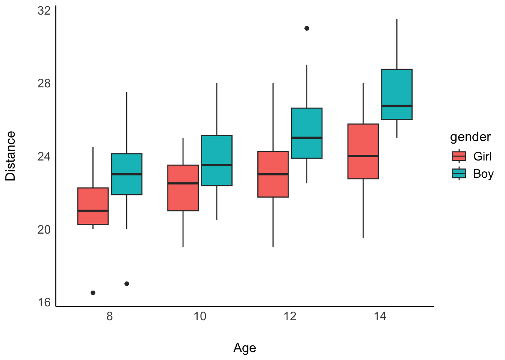
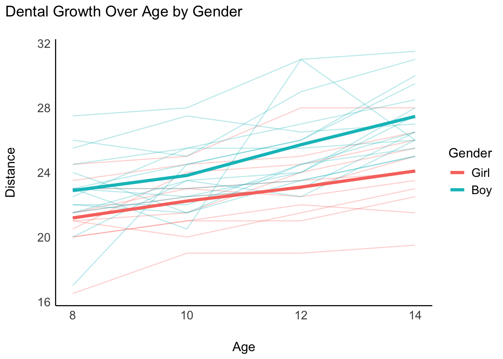
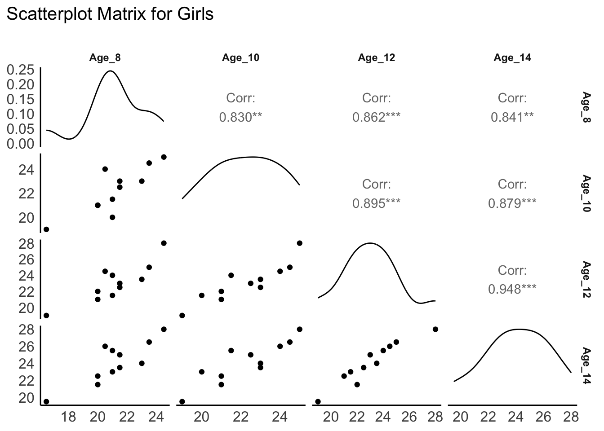
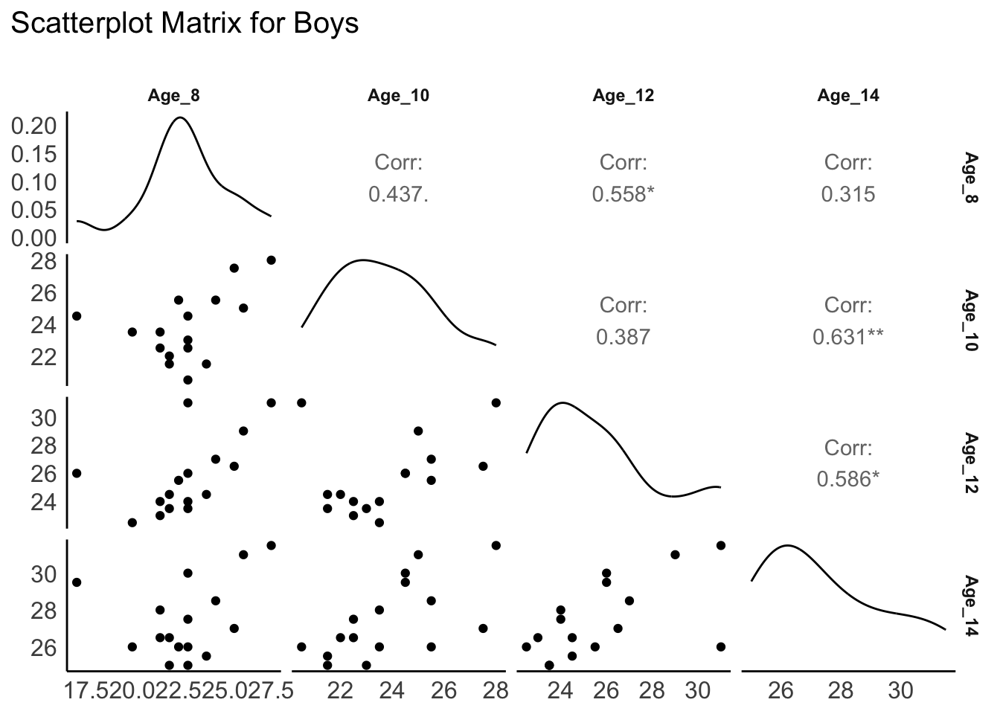
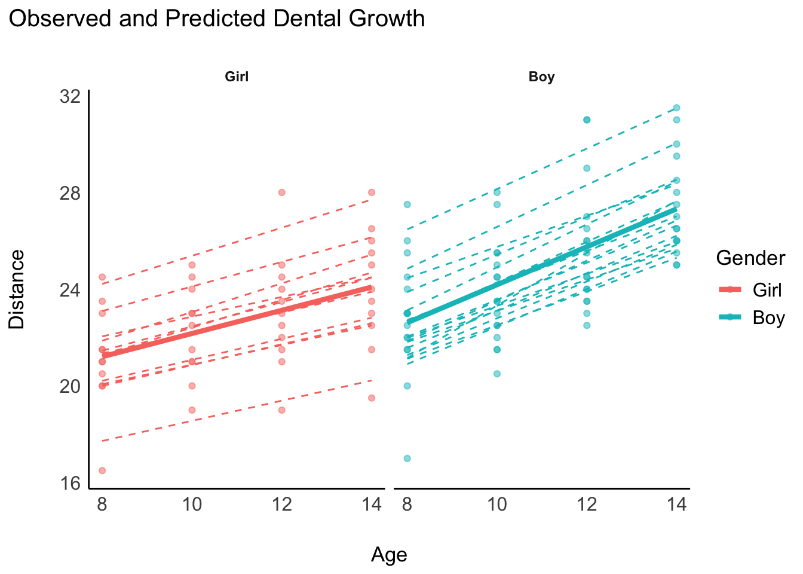
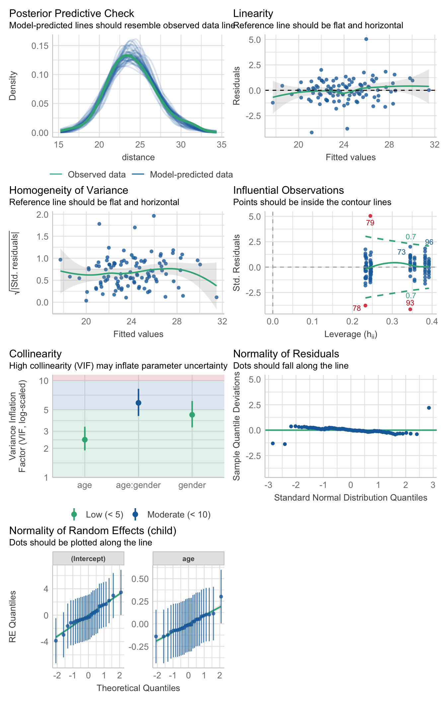

# Load necessary libraries
# For various statistical functions
pacman::p_load(tidyverse, nlme, lme4, ggplot2, heplots, car, see, ggpubr, sandwich, clubSandwich, clubSandwich, lmerTest, GGally, here)
# Set the theme for ggplot2
ggplot2::theme_set(see::theme_modern())Analysis of Dental Growth Data Using Mixed-Effects Models
Introduction
This analysis examines the dental growth data to investigate the development of children’s teeth over time. Specifically, we analyze the distance from the center of the pituitary gland to the pteryomaxillary fissure (referred to as “distance”) measured at ages 8, 10, 12, and 14 years. The data includes observations from both boys and girls, allowing us to compare growth patterns between genders.
Objectives:
- Explore growth patterns of boys and girls over time.
- Model the distance as a function of age and gender using mixed-effects models.
- Compare different covariance structures and select the best-fitting model.
- Interpret the results and understand implications for dental growth.
Data Preparation
Loading Libraries
We use the tidyverse suite for data manipulation, lme4 and nlme for mixed-effects modeling, and ggplot2 for visualization.
tidyverse: For data manipulation and visualization.nlme: For fitting linear and nonlinear mixed-effects models.lme4: For fitting linear mixed-effects models.ggplot2: For enhanced data visualization.heplots: For testing covariance matrices.car: For various statistical functions.see: For custom themes and color palettes.ggpubr: For publication-ready plots.sandwich: For robust standard errors.clubSandwich: For cluster-robust variance-covariance matrices.
Loading and Exploring the Data
The dental data is loaded from the provided file. We begin by reading the data and examining its structure.
# Load the dental data
# dental_data <- readr::read_table("https://raw.githubusercontent.com/quantPsych/test-web/refs/heads/main/data/dental.dat",
# col_names = c("obs", "child", "age", "distance", "gender")
# )
# dat_file <- here("data", "dental.dat")
# Load the dental data
dental_data <- readr::read_table("dental.dat",
col_names = c("obs", "child", "age", "distance", "gender")
)
── Column specification ────────────────────────────────────────────────────────
cols(
obs = col_double(),
child = col_double(),
age = col_double(),
distance = col_double(),
gender = col_double()
)# Examine the first few rows
head(dental_data)# A tibble: 6 × 5
obs child age distance gender
<dbl> <dbl> <dbl> <dbl> <dbl>
1 1 1 8 21 0
2 2 1 10 20 0
3 3 1 12 21.5 0
4 4 1 14 23 0
5 5 2 8 21 0
6 6 2 10 21.5 0Data Cleaning and Transformation
We convert the gender variable to a factor with labels for better readability and create separate datasets for boys and girls.
# Convert gender to a factor with labels
dental_data <- dental_data |>
mutate(
gender = factor(gender, levels = c(0, 1), labels = c("Girl", "Boy")),
child = factor(child)
)
# Create separate datasets for girls and boys
dental_girls <- dental_data |> filter(gender == "Girl")
dental_boys <- dental_data |> filter(gender == "Boy")Calculating Mean Distances
We calculate the mean distance for each age and gender group.
# Calculate mean distances by age and gender
mean_distances <- dental_data |>
group_by(age, gender) |>
summarize(mean_distance = mean(distance))`summarise()` has grouped output by 'age'. You can override using the `.groups`
argument.# Display the mean distances
mean_distances# A tibble: 8 × 3
# Groups: age [4]
age gender mean_distance
<dbl> <fct> <dbl>
1 8 Girl 21.2
2 8 Boy 22.9
3 10 Girl 22.2
4 10 Boy 23.8
5 12 Girl 23.1
6 12 Boy 25.7
7 14 Girl 24.1
8 14 Boy 27.5Boxplot by age for boys and girls
dental_data |>
ggplot(aes(x = factor(age), y= distance, fill= gender)) +
geom_boxplot() +
labs(
x = "Age",
y = "Distance")+
see::scale_color_see_d()

Exploratory Data Analysis
Visualizing Growth Patterns
Interaction Plot
We create an interaction plot to visualize the growth patterns of boys and girls over time.
# Interaction plot for age and gender
ggplot(dental_data, aes(x = age, y = distance, color = gender, group = child)) +
geom_line(alpha = 0.3) +
stat_summary(aes(group = gender), fun = mean, geom = "line", size = 1.5) +
labs(
title = "Dental Growth Over Age by Gender",
x = "Age",
y = "Distance",
color = "Gender"
) Warning: Using `size` aesthetic for lines was deprecated in ggplot2 3.4.0.
ℹ Please use `linewidth` instead.

Figure 1: Interaction plot showing dental growth over age by gender.
Scatterplot Matrices
We create scatterplot matrices to explore the relationships between distances at different ages for boys and girls.
# Convert data from long to wide format
dental_wide <- dental_data |>
select(child, gender, age, distance) |>
pivot_wider(names_from = age, values_from = distance, names_prefix = "Age_")
# Separate datasets for girls and boys
dental_wide_girls <- dental_wide |> filter(gender == "Girl")
dental_wide_boys <- dental_wide |> filter(gender == "Boy")# Scatterplot matrix for girls
ggpairs(dental_wide_girls |> select(starts_with("Age_")),
title = "Scatterplot Matrix for Girls")
# Scatterplot matrix for boys
ggpairs(dental_wide_boys |> select(starts_with("Age_")),
title = "Scatterplot Matrix for Boys")


Figure 2: Scatterplot matrices for girls and boys showing relationships between distances at different ages.
Covariance and Correlation Matrices
We compute covariance and correlation matrices for distances at different ages for boys and girls.
# Covariance and correlation for girls
cov_girls <- cov(dental_wide_girls |> select(starts_with("Age_")), use = "complete.obs")
corr_girls <- cor(dental_wide_girls |> select(starts_with("Age_")), use = "complete.obs")
# Covariance and correlation for boys
cov_boys <- cov(dental_wide_boys |> select(starts_with("Age_")), use = "complete.obs")
corr_boys <- cor(dental_wide_boys |> select(starts_with("Age_")), use = "complete.obs")# Display correlation
round(corr_girls, 2)[lower.tri(corr_girls)][1] 0.83 0.86 0.84 0.90 0.88 0.95round(corr_boys, 2)[lower.tri(corr_boys)][1] 0.44 0.56 0.32 0.39 0.63 0.59Interpretation: The covariance and correlation matrices indicate how distances at different ages are related within each gender group.
Testing Equivalence of Covariance Matrices
We use the boxM test to check if the covariance matrices are equivalent across genders.
# Perform Box's M test
boxm_result <- boxM(dental_wide |> select(starts_with("Age_")), dental_wide$gender)
# Display the result
boxm_result
Box's M-test for Homogeneity of Covariance Matrices
data: select(dental_wide, starts_with("Age_"))
Chi-Sq (approx.) = 17.335, df = 10, p-value = 0.06727Interpretation: A significant result (p-value < 0.05) suggests that the covariance matrices are different across genders.
Modeling
We aim to model the distance as a function of age and gender, accounting for the repeated measures within each child.
Model 1: Linear Mixed-Effects Model Using lme4
We use the lme4 package to fit a linear mixed-effects model with random intercepts and slopes for each child.
# Fit the mixed-effects model with random intercept and slope for age
model_lme4 <- lmer(distance ~ age * gender + (age | child), data = dental_data)
# Display the model summary
summary(model_lme4, correlation = FALSE)Linear mixed model fit by REML. t-tests use Satterthwaite's method [
lmerModLmerTest]
Formula: distance ~ age * gender + (age | child)
Data: dental_data
REML criterion at convergence: 432.6
Scaled residuals:
Min 1Q Median 3Q Max
-3.1694 -0.3862 0.0070 0.4454 3.8490
Random effects:
Groups Name Variance Std.Dev. Corr
child (Intercept) 5.77449 2.4030
age 0.03245 0.1801 -0.67
Residual 1.71663 1.3102
Number of obs: 108, groups: child, 27
Fixed effects:
Estimate Std. Error df t value Pr(>|t|)
(Intercept) 17.3727 1.2281 25.0078 14.147 1.94e-13 ***
age 0.4795 0.1037 25.0113 4.625 9.85e-05 ***
genderBoy -1.0321 1.5953 25.0078 -0.647 0.5235
age:genderBoy 0.3048 0.1347 25.0113 2.263 0.0326 *
---
Signif. codes: 0 '***' 0.001 '**' 0.01 '*' 0.05 '.' 0.1 ' ' 1Interpretation
- Fixed Effects: Estimates of the average effect of age, gender, and their interaction on distance.
- Random Effects: Allows each child to have their own intercept and slope, capturing individual growth trajectories.
Model 2: Generalized Least Squares Using nlme
We explore different covariance structures using the nlme package’s gls function.
Compound Symmetry with Different Variances by Gender
# Fit GLS model with compound symmetry and different variances by gender
model_cs2 <- gls(distance ~ age * gender,
data = dental_data,
correlation = corCompSymm(form = ~ 1 | child),
weights = varIdent(form = ~ 1 | gender),
method = "ML"
)
# Display the model summary
summary(model_cs2)Generalized least squares fit by maximum likelihood
Model: distance ~ age * gender
Data: dental_data
AIC BIC logLik
430.6521 449.427 -208.3261
Correlation Structure: Compound symmetry
Formula: ~1 | child
Parameter estimate(s):
Rho
0.7228109
Variance function:
Structure: Different standard deviations per stratum
Formula: ~1 | gender
Parameter estimates:
Girl Boy
1.00000 1.71672
Coefficients:
Value Std.Error t-value p-value
(Intercept) 17.372727 0.8175862 21.248802 0.0000
age 0.479545 0.0612544 7.828755 0.0000
genderBoy -1.032102 1.4222595 -0.725678 0.4697
age:genderBoy 0.304830 0.1065571 2.860716 0.0051
Correlation:
(Intr) age gndrBy
age -0.824
genderBoy -0.575 0.474
age:genderBoy 0.474 -0.575 -0.824
Standardized residuals:
Min Q1 Med Q3 Max
-2.78081373 -0.63039864 -0.08111374 0.52140257 2.87744432
Residual standard error: 1.693422
Degrees of freedom: 108 total; 104 residualAutoregressive Structure (AR(1))
# Fit GLS model with AR(1) correlation structure
model_ar1 <- gls(distance ~ age * gender,
data = dental_data,
correlation = corAR1(form = ~ 1 | child),
method = "ML"
)
# Display the model summary
summary(model_ar1)Generalized least squares fit by maximum likelihood
Model: distance ~ age * gender
Data: dental_data
AIC BIC logLik
452.681 468.7738 -220.3405
Correlation Structure: AR(1)
Formula: ~1 | child
Parameter estimate(s):
Phi
0.6071166
Coefficients:
Value Std.Error t-value p-value
(Intercept) 17.321720 1.6345089 10.597507 0.0000
age 0.483732 0.1409898 3.430973 0.0009
genderBoy -0.729724 2.1232893 -0.343676 0.7318
age:genderBoy 0.285840 0.1831511 1.560676 0.1216
Correlation:
(Intr) age gndrBy
age -0.949
genderBoy -0.770 0.730
age:genderBoy 0.730 -0.770 -0.949
Standardized residuals:
Min Q1 Med Q3 Max
-2.5993844 -0.6176776 -0.0866274 0.5525954 2.3391875
Residual standard error: 2.211512
Degrees of freedom: 108 total; 104 residualAutoregressive Structure (AR(1)) with Different Variances by Gender
# Fit GLS model with AR(1) correlation structure and different
# variances
model_ar1_var <- gls(distance ~ age* gender ,
data = dental_data,
correlation = corAR1(form = ~ 1 | child),
weights = varIdent(form = ~ 1 | gender ),
method = "ML"
)
# Display the model summary
summary(model_ar1_var)Generalized least squares fit by maximum likelihood
Model: distance ~ age * gender
Data: dental_data
AIC BIC logLik
443.0267 461.8016 -214.5134
Correlation Structure: AR(1)
Formula: ~1 | child
Parameter estimate(s):
Phi
0.7324446
Variance function:
Structure: Different standard deviations per stratum
Formula: ~1 | gender
Parameter estimates:
Girl Boy
1.000000 1.754618
Coefficients:
Value Std.Error t-value p-value
(Intercept) 17.313902 1.1306479 15.313258 0.0000
age 0.484296 0.0951268 5.091058 0.0000
genderBoy -0.671131 1.9960327 -0.336233 0.7374
age:genderBoy 0.283281 0.1679358 1.686843 0.0946
Correlation:
(Intr) age gndrBy
age -0.925
genderBoy -0.566 0.524
age:genderBoy 0.524 -0.566 -0.925
Standardized residuals:
Min Q1 Med Q3 Max
-2.7804651 -0.6410424 -0.1037228 0.5233202 2.8909363
Residual standard error: 1.686147
Degrees of freedom: 108 total; 104 residualModel Comparison
We compare models using Akaike Information Criterion (AIC) and Bayesian Information Criterion (BIC).
# Compare models
anova(model_cs2, model_ar1, model_ar1_var) Model df AIC BIC logLik Test L.Ratio p-value
model_cs2 1 7 430.6521 449.4270 -208.3261
model_ar1 2 6 452.6810 468.7738 -220.3405 1 vs 2 24.0289 <.0001
model_ar1_var 3 7 443.0267 461.8016 -214.5134 2 vs 3 11.6543 6e-04Interpretation: The model with the lower AIC and BIC values is considered to have a better fit.
Robust Standard Errors
We calculate robust standard errors for the selected GLS model.
robust_vcov_lmm <- clubSandwich::vcovCR(model_cs2, type = "CR2")
# Cluster-robust variance-covariance matrix
se_cs2_robust <- robust_vcov_lmm |>
diag() |>
sqrt()
se_cs2_robust (Intercept) age genderBoy age:genderBoy
0.78985669 0.06876072 1.48408299 0.12591257 clubSandwich::coef_test(model_cs2, vcov = robust_vcov_lmm, test = "Satterthwaite") Coef. Estimate SE t-stat d.f. (Satt) p-val (Satt) Sig.
(Intercept) 17.373 0.7899 21.995 9.92 <0.001 ***
age 0.480 0.0688 6.974 9.92 <0.001 ***
genderBoy -1.032 1.4841 -0.695 24.36 0.4934
age:genderBoy 0.305 0.1259 2.421 24.36 0.0233 *Results
Model Summaries
Mixed-Effects Model (lme4)
# Fixed effects
fixef(model_lme4) (Intercept) age genderBoy age:genderBoy
17.3727273 0.4795455 -1.0321023 0.3048295 # Random effects summary
print(VarCorr(model_lme4), comp = c("Variance", "Std.Dev.")) Groups Name Variance Std.Dev. Corr
child (Intercept) 5.774487 2.40302
age 0.032452 0.18014 -0.667
Residual 1.716625 1.31020 Key Findings:
- The interaction between age and gender is significant, suggesting different growth rates between boys and girls.
- The random effects indicate substantial variability between children in both baseline distance and growth rates.
GLS Model with Compound Symmetry (nlme)
# Fixed effects coefficients
coef(model_cs2) (Intercept) age genderBoy age:genderBoy
17.3727273 0.4795455 -1.0321023 0.3048295 # Standard errors (model-based)
summary(model_cs2)$tTable[, "Std.Error"] (Intercept) age genderBoy age:genderBoy
0.81758620 0.06125437 1.42225948 0.10655709 # Robust standard errors
se_cs2_robust (Intercept) age genderBoy age:genderBoy
0.78985669 0.06876072 1.48408299 0.12591257 Key Findings:
- The compound symmetry structure with different variances by gender fits the data well.
- Robust standard errors provide a more reliable inference when model assumptions may be violated.
Visualizations
Predicted Growth Curves
We plot the predicted growth curves for boys and girls based on the mixed-effects model.
# Add predicted values to the data
dental_data <- dental_data |>
mutate(pred_distance = predict(model_lme4))
# Plot observed and predicted distances
ggplot(dental_data, aes(x = age, y = distance, color = gender)) +
geom_point(alpha = 0.5) +
geom_line(aes(y = pred_distance, group = child), linetype = "dashed") +
stat_summary(aes(y = pred_distance, group = gender), fun = mean, geom = "line", size = 1.5) +
facet_wrap(~ gender) +
labs(
title = "Observed and Predicted Dental Growth",
x = "Age",
y = "Distance",
color = "Gender"
)

Figure 3: Observed and predicted dental growth curves for boys and girls.
Residual Diagnostics
We examine the residuals to assess model assumptions.
# Residual plots for the lme4 model
performance::check_model(model_lme4)

Interpretation: The residual plots help assess the homoscedasticity and normality of residuals. Deviations from the line in the QQ-plot may suggest non-normality.
Conclusion
In this analysis, we investigated dental growth patterns in children using mixed-effects models. Our findings indicate that:
- Growth Patterns: Both boys and girls show an increase in the distance measure with age, but boys tend to have a steeper growth trajectory.
- Model Selection: The mixed-effects model with random intercepts and slopes provided a good fit, capturing individual variability in growth.
- Covariance Structures: The GLS model with compound symmetry and different variances by gender was supported by the data, indicating that variability differs between genders.
Implications: Understanding these growth patterns can aid in pediatric dental assessments, orthodontic planning, and early interventions when necessary.
Future Work:
- Additional Covariates: Incorporate factors such as socioeconomic status, nutrition, or health conditions to further explain variability in growth.
- Longitudinal Follow-Up: Extend the study to include more time points or follow-up into adulthood to model long-term growth patterns.
- Advanced Modeling: Explore nonlinear mixed-effects models or growth curve models if growth patterns are not strictly linear.
References
- Pinheiro, J. C., & Bates, D. M. (2000). Mixed-Effects Models in S and S-PLUS. Springer.
- Bates, D., Mächler, M., Bolker, B., & Walker, S. (2015). Fitting Linear Mixed-Effects Models Using lme4. Journal of Statistical Software, 67(1), 1–48.
- Wickham, H. (2016). ggplot2: Elegant Graphics for Data Analysis. Springer-Verlag New York.
- Fox, J., & Weisberg, S. (2019). An R Companion to Applied Regression. Sage Publications.